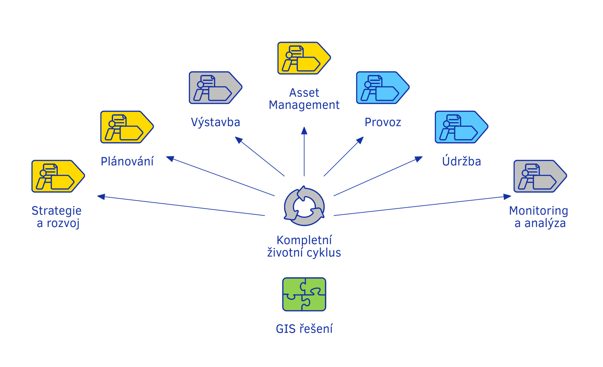
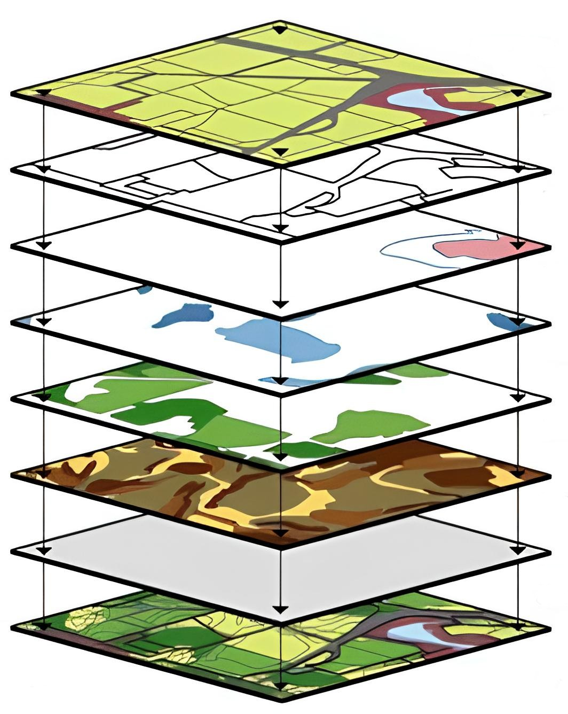

{kind=link}
Digitální mapy: propojení prostoru a dat
{kind=link}
Využití GIS v jednotlivých fázích projektů
{kind=link}
Vícevrstvý model geografických dat: Vizualizace GIS analýzy
Co je geoinformatika?
Definice geoinformatiky

Historie geoinformatiky a její význam v dnešním světě
Geoinformatika je vědecký obor, který propojuje geografii, informatiku a analýzu prostorových dat. Díky těmto technologiím jsme schopni lépe pochopit, jak funguje svět kolem nás.
Geoinformatika zahrnuje práci s digitálními mapami, analýzu satelitních snímků a vytváření prostorových modelů, které pomáhají při plánování, analýze a rozhodování.
Jak geoinformatika mění svět?
Geoinformatika nachází uplatnění v různých oblastech života. Zde je několik příkladů:
- Urbanismus: Pomáhá plánovat městské čtvrti a dopravu.
- Životní prostředí: Monitoruje změny krajiny a klimatické změny.
- Zemědělství: Optimalizuje využití půdy a sleduje zdraví plodin.
- Doprava: Umožňuje efektivnější plánování tras a analýzu dopravních toků.
Přínosy geoinformatiky
Geoinformatika má mnoho výhod, díky kterým je klíčová pro moderní svět:
- Pomáhá efektivně využívat zdroje.
- Zlepšuje schopnost reagovat na přírodní katastrofy.
- Poskytuje přesné a aktuální informace o prostoru.
- Podporuje udržitelné plánování a rozhodování.